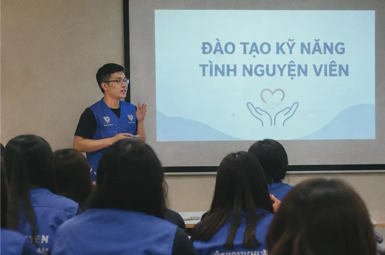
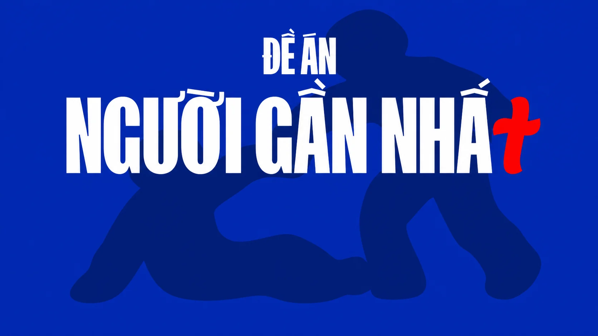
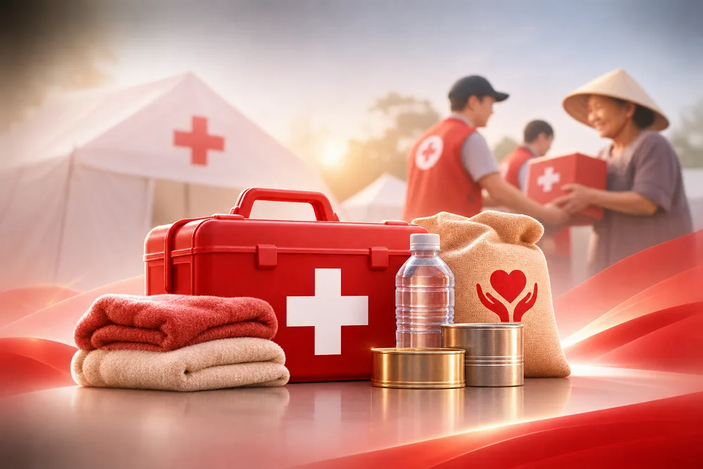
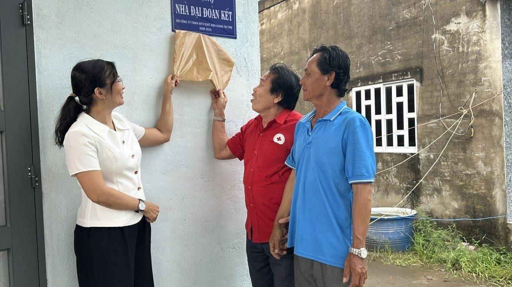
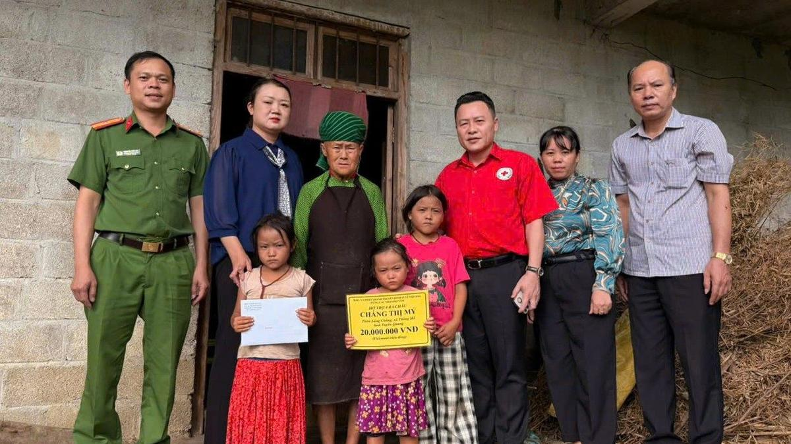
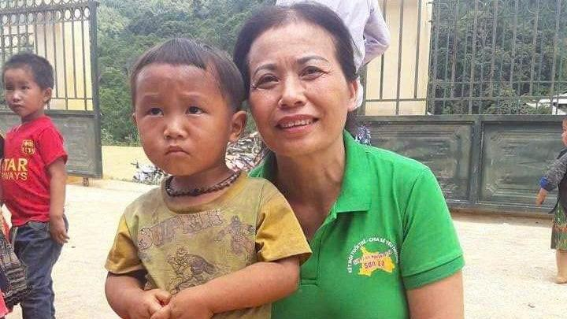
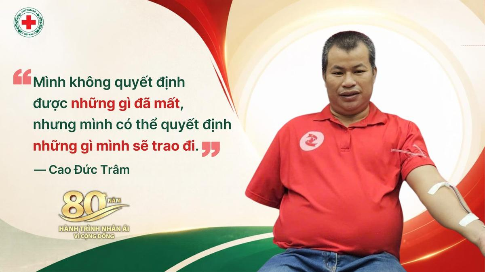

Gần để thấu hiểu
Quan tâm những người xung quanh, biết nhận diện khi ai đó cần giúp đỡ và sẵn sàng có mặt đúng lúc.
Chương trình xã hội quốc gia – Hội Chữ thập đỏ Việt Nam
Biến lòng tốt thành
Người Gần Nhất là chương trình xã hội với tầm nhìn dài hạn do Hội Chữ thập đỏ Việt Nam chủ trì, VCCorp và Báo Tuổi Trẻ là đơn vị khởi xướng, nhằm xây dựng một cộng đồng Việt Nam nhân ái, đủ kiến thức và kỹ năng để biến lòng tốt thành hành động thiết thực, đúng lúc, đúng cách, trong đó người trẻ là lực lượng nòng cốt.


Người Việt giàu lòng nhân ái. Khi ai đó cần giúp, người có mặt đầu tiên thường là người thân, đồng nghiệp, bạn học, hàng xóm. Người Gần Nhất ra đời nhằm biến lòng tốt thành hành động thiết thực, đúng lúc, đúng cách. Giai đoạn đầu, chương trình tập trung phổ cập kỹ năng sơ cấp cứu cho người trẻ Việt Nam.
Xây dựng cộng đồng nhân ái, đủ năng lực hành động vì sự an toàn của mọi người xung quanh.
Lấy người trẻ (học sinh, sinh viên) làm hạt nhân tiên phong lan tỏa đến toàn xã hội.
Biến lòng tốt thành năng lực hành động — để mỗi người đều có thể là Người Gần Nhất, là điểm tựa nhân ái của cộng đồng.
Công ty CP VCCorpĐơn vị khởi xướng

Hội Chữ thập đỏĐơn vị chủ trì

Báo Tuổi TrẻĐơn vị khởi xướng

Quan tâm những người xung quanh, biết nhận diện khi ai đó cần giúp đỡ và sẵn sàng có mặt đúng lúc.
Kết nối con người, cộng đồng và các nguồn lực để sự giúp đỡ đến đúng lúc, đúng nơi cần thiết.
Biến lòng tốt thành hành động thiết thực, đúng lúc, đúng cách, góp phần lan tỏa tinh thần nhân ái trong cộng đồng.
Phổ cập kỹ năng sơ cấp cứu cho người trẻ Việt Nam — kết hợp ứng dụng công nghệ với thực hành trực tiếp cùng huấn luyện viên của Hội và các buổi trải nghiệm tại trường học.
Nội dung được xây dựng trên giáo trình của Hội Chữ thập đỏ Việt Nam và các đối tác chuyên môn y tế.
Định hướng đào tạo kết hợp công nghệ tương tác, thực hành trực tiếp cùng huấn luyện viên chuyên trách của Hội.
Chương trình cùng Hội tìm kiếm, biểu dương những câu chuyện cứu người đời thường đúng cách và lan tỏa hướng dẫn xử lý tình huống tương tự.
Huy hiệu được cấp trên Cổng Nhân đạo số quốc gia, kèm bản vật lý dạng pin cài áo. Mỗi cấp độ được xét duyệt theo tiêu chí chuyên môn của Hội Chữ thập đỏ Việt Nam.
Bắt đầu bằng việc hiểu các giá trị nhân đạo, biết tôn trọng phẩm giá con người, nhận diện nguy cơ và nuôi dưỡng tinh thần trách nhiệm với cộng đồng.
Từ hiểu biết đến năng lực thực hành sơ cấp cứu, được đào tạo theo giáo trình của Hội và thực hành trực tiếp cùng huấn luyện viên chuyên môn.
Vận dụng kiến thức và kỹ năng vào thực tế: biết gọi 115, giữ an toàn và trực tiếp hỗ trợ nạn nhân đúng cách trong thời gian chờ lực lượng y tế.
Trở thành người kết nối, đại sứ truyền thông, hướng dẫn kỹ năng nhân ái cho bạn bè, gia đình, nhà trường và tiếp nối hành trình cứu người.
Chương trình cùng Hội tìm kiếm, tôn vinh những cá nhân, tập thể đã giúp người gặp nạn đúng lúc, đúng cách. Các câu chuyện được lan tỏa cùng hướng dẫn sơ cấp cứu cho tình huống tương tự.

Tại tỉnh Vĩnh Long, ông Mai Hữu Ánh, Ủy viên Ban Thường vụ Hội Chữ thập đỏ tỉnh, đại lý vé số khu vực miền Nam, là một trong những người tích cực kết nối nguồn lực hỗ trợ người nghèo. Trong nhiều năm qua, ông đã vận động các doanh nghiệp, đặc biệt là các công ty xổ số kiến thiết, chung tay xây dựng nhà ở, trao học bổng, tặng quà cho người dân có hoàn cảnh khó khăn, góp phần cải thiện đời sống và lan tỏa tinh thần nhân ái tại địa phương.

Từ những mái nhà bị hư hỏng, những đứa trẻ mồ côi đến các gia đình chật vật mưu sinh, chuyên mục “Nhịp cầu nhân ái” của Báo và phát thanh, truyền hình Tuyên Quang đã trở thành cầu nối giữa những hoàn cảnh khó khăn với các tổ chức, cá nhân hảo tâm. Mỗi câu chuyện được chia sẻ không chỉ mang đến sự hỗ trợ thiết thực, mà còn tiếp thêm niềm tin để người dân vượt qua nghịch cảnh, từng bước ổn định cuộc sống.

Hưởng ứng đợt thi đua cao điểm “80 ngày hành động vì cộng đồng” hướng tới kỷ niệm 80 năm Ngày thành lập Hội Chữ thập đỏ Việt Nam (23/11/1946 – 23/11/2026), những câu chuyện về người tốt, việc thiện góp phần lan tỏa tinh thần nhân ái bằng những hành động cụ thể trong cuộc sống. Bà Lê Thị Minh Phương, sinh năm 1962 Số nhà 17, Tổ 1, Phường Tô Hiệu, tỉnh Sơn La, là một trong những người đã bền bỉ dành 14 năm tham gia các hoạt động thiện nguyện, từ nấu cháo cho bệnh nhân đến những chuyến cứu trợ người dân vùng thiên tai, khó khăn.

Cao Đức Trâm, tình nguyện viên Chữ thập đỏ ở thôn Tiến Thọ, xã Đức Quang, đã hơn 55 lần hiến máu, nhiều lần hiến máu cấp cứu và đăng ký hiến mô, tạng. Từng mất đi cánh tay trái sau tai nạn lao động, anh vẫn bền bỉ tham gia các hoạt động nhân đạo, lan tỏa tinh thần sẻ chia và kết nối những tấm lòng vì cộng đồng.
Người Gần Nhất hướng tới kết nối với các tổ chức nhân đạo quốc tế, để người trẻ Việt Nam mang năng lực và lòng nhân ái ra thế giới.


Chưa thấy câu trả lời bạn cần?
Liên hệ 024-3 8224030 hoặc vanphongctd@gmail.com
Người Gần Nhất là chương trình xã hội do Hội Chữ thập đỏ Việt Nam chủ trì, VCCorp và Báo Tuổi Trẻ là đơn vị sáng lập. Tầm nhìn là xây dựng một cộng đồng Việt Nam nhân ái, đủ kiến thức và kỹ năng để biến lòng tốt thành hành động thiết thực, đúng lúc, đúng cách, trong đó người trẻ là lực lượng nòng cốt.
Chương trình chính thức ra mắt tại Hà Nội vào tháng 11/2026. Giai đoạn đầu kéo dài đến tháng 5/2027, với hoạt động đào tạo kết hợp ứng dụng công nghệ, thực hành trực tiếp cùng huấn luyện viên của Hội và các buổi trải nghiệm tại trường học.
Huy hiệu phát triển theo 4 cấp độ: Nhận thức, Kỹ năng, Hành động, Lan tỏa. Mỗi cấp độ được xét theo tiêu chí chuyên môn của Hội. Huy hiệu được cấp trên Cổng Nhân đạo số quốc gia, kèm bản vật lý dạng pin cài áo.
Từ nền tảng sơ cấp cứu, chương trình từng bước mở rộng sang phòng chống đuối nước, nhận biết đột quỵ, ứng phó thiên tai, cùng các hoạt động nhân đạo như hiến máu, cứu trợ, đồng thời xây dựng Mạng lưới Người Gần Nhất toàn quốc và kết nối với các tổ chức nhân đạo quốc tế.
Dù mở rộng đến đâu, chương trình vẫn giữ một mục tiêu: biến lòng tốt thành năng lực hành động. Ai cũng có thể là Người Gần Nhất. Mỗi người là một điểm tựa nhân ái của cộng đồng.